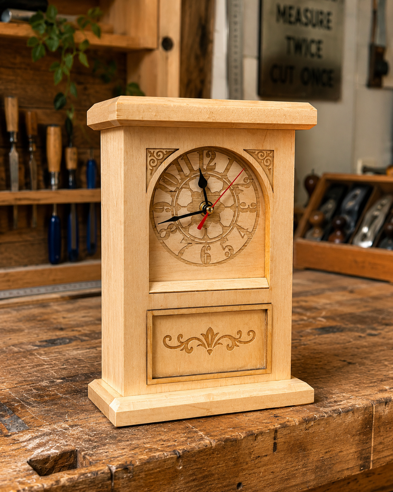

1. Read and inspect
Study the Clock theory, working drawing and purposeful workshop references.
Stage 5 Industrial Technology - Timber
Read the plan. Build in sequence. Prove every decision.

Stage 5 Timber · 2027 Year 9 pathway
Follow the approved drawing and teacher-directed workshop sequence.
How the course works
Build the Clock and its evidence through the same four-step routine in every paired-week module.
Study the Clock theory, working drawing and purposeful workshop references.
Answer the guided questions and use the feedback to correct misconceptions.
Complete the scaffolded responses using prompts and appropriate response examples.
Check your evidence and download the module evidence PDF before leaving.
Student evidence. Work saves only in this browser and device profile. Save every completed module as a PDF and download folio backups before changing devices or clearing browser data.
Stage 5 Timber · 2027 Year 9 pathway
This course keeps theory, workshop decisions and folio evidence together. Use the same four-step routine in every paired-week module.
The project
Follow the approved drawing and teacher-directed workshop sequence.
How the course works
Study the Clock theory, working drawing and purposeful workshop references.
Answer the guided questions and use the feedback to correct misconceptions.
Complete the scaffolded responses using prompts and appropriate response examples.
Check your evidence and download the module evidence PDF before leaving.
Course map
Understand the Clock brief, read the supplied drawing and manage workshop risk before material is removed.
Inspect the supplied timber, map the approved work sequence and prepare a drawing-based cutting list before practical manufacture.
Plan the face opening, verify the actual school drill press procedure and protect accuracy through controlled housekeeping.
Form and check the carcass features, then dry-fit and clamp an accurate assembly using the approved process.
Use a suitable off-cut, build the hidden drawer and diagnose fit before making any teacher-approved correction.
Connect timber behaviour and justified material choice with a controlled, oil-ready surface.
Plan and inspect the three-coat oil system, then fit and test the supplied battery mechanism.
Apply design principles, communicate clearly and compare workshop processes with current technologies.
Build an authentic evidence trail, caption useful photographs and evaluate the finished Clock honestly.
Complete final quality assurance, use feedback to revise and submit a coherent evidence package.